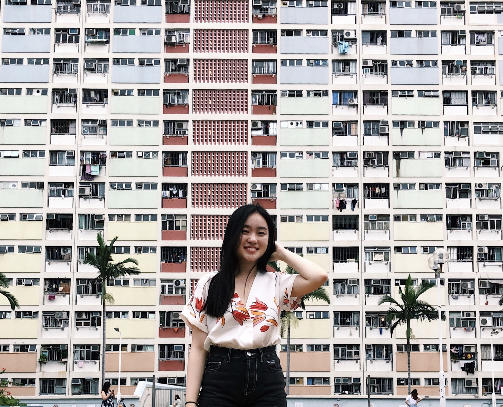

I'm currently a junior in Cornell's College of Engineering majoring in
Computer Science.
This semester I am working on mobile development for Cornell University Sustainable Design's
Currents project. I'm also a web developer for the Cornell chapter of Society of Women Engineers.
Outside of work, I love travelling, needle felting, taking photos, and baking macarons!
Feel free to contact me at jn437@cornell.edu!